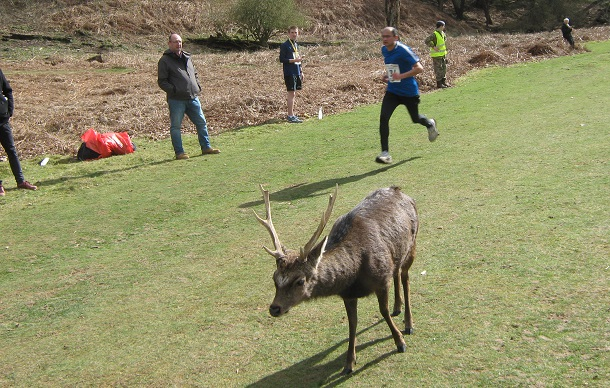

Andrew Mead was first M50 and Ed Saunders and Andrew Hutchinson second and third overall as fourteen SAC runners contested the Rotary 10k on 17th March. The SAC results were:
| Race No | Name | Time | Chip Time | Category | Cat Pos | Gender | Gen Pos | Team |
|---|---|---|---|---|---|---|---|---|
| 379 | Edmund SAUNDERS | 00:39:16 | 00:39:16 | M Sen | 2 | Male | 2 | SEVENOAKS AC |
| 377 | Andrew HUTCHINSON | 00:41:05 | 00:41:05 | M Sen | 3 | Male | 3 | SEVENOAKS AC |
| 240 | Andrew MEAD | 00:41:33 | 00:41:33 | M 50 - 59 | 1 | Male | 6 | SEVENOAKS AC |
| 366 | Daniel CHAPLIN | 00:41:50 | 00:41:50 | M Sen | 5 | Male | 7 | SEVENOAKS AC |
| 121 | Matthew CLARKE | 00:44:44 | 00:44:41 | M 40 - 49 | 5 | Male | 18 | SEVENOAKS AC |
| 322 | Graham DWYER | 00:45:28 | 00:45:26 | M 40 - 49 | 9 | Male | 25 | SEVENOAKS AC |
| 95 | James Nash | 00:46:12 | 00:46:02 | M Sen | 15 | Male | 29 | SEVENOAKS AC |
| 260 | Marion VAN LILLE | 00:47:12 | 00:47:02 | F Sen | 4 | Female | 7 | SEVENOAKS AC |
| 94 | Sean Leith | 00:49:36 | 00:49:24 | M 40 - 49 | 20 | Male | 64 | SEVENOAKS AC |
| 415 | Hugh SHEWELL | 00:50:56 | 00:50:49 | M Sen | 44 | Male | 83 | SEVENOAKS AC |
| 237 | Simon HALLPIKE | 00:51:52 | 00:51:46 | M 60+ | 5 | Male | 93 | SEVENOAKS AC |
| 278 | Lionel STIELOW | 00:59:11 | 00:58:44 | M 60+ | 15 | Male | 155 | SEVENOAKS AC |
| 399 | Adam WESTBROOKE | 01:04:27 | 01:04:01 | M 40 - 49 | 59 | Male | 186 | SEVENOAKS AC |
| 382 | Sylvia LEWIS | 01:09:54 | 01:09:29 | F 55+ | 18 | Female | 94 | SEVENOAKS AC |
The full results are here.
